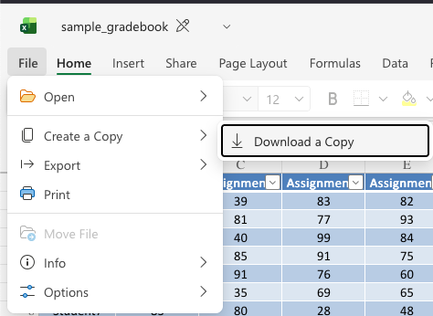

── Attaching core tidyverse packages ──────────────────────── tidyverse 2.0.0 ──
✔ dplyr 1.1.4 ✔ readr 2.1.5
✔ forcats 1.0.1 ✔ stringr 1.5.2
✔ ggplot2 4.0.0 ✔ tibble 3.3.0
✔ lubridate 1.9.4 ✔ tidyr 1.3.1
✔ purrr 1.1.0
── Conflicts ────────────────────────────────────────── tidyverse_conflicts() ──
✖ dplyr::filter() masks stats::filter()
✖ dplyr::lag() masks stats::lag()
✖ ggplot2::theme_void() masks tinytable::theme_void()
ℹ Use the conflicted package (<http://conflicted.r-lib.org/>) to force all conflicts to become errorsWarning in read.table(file = file, header = header, sep = sep, quote = quote, :
incomplete final line found by readTableHeader on 'data-types.csv'Welcome
What is Assessment?
Assessment Triangle

A grade is an inadequate report of an inaccurate judgement by a biased and variable judge of the extent to which a student has attained an undefined level of mastery of an unknown proportion of an indefinite material.
Purposes of Assessment…
…of learning
…for learning
…as learning
learning is ontological
“The mission of Trinity Western University, as an arm of the Church, is to develop godly Christian leaders: positive, goal-oriented university graduates with thoroughly Christian minds; growing disciples of Jesus Christ who glorify God through fulfilling the Great Commission, serving God and people in the various marketplaces of life.”
teaching is ontological
assessing is ontological
Assessment Identity
beliefs | feelings | knowledge | skills
Discuss with your group how you would characterize your assessment identity as it is and how it came to be.
Highlights?
Poll: Enter 1-3 words at a time that summarize your assessment identity. (WordCloud)
Agency in Assessment
Poll: What method of reporting assignment grades to learners best fits your current practice? - percentage scale (e.g., 74%) - raw score (e.g., 19/26) - letter grade (e.g., A+, A, A- … C-, D, F) - proficiency scale (e.g. Excellent, Meets Expectations, Revision Needed, Not Assessable) - a combination of the above - other (please specify)
| letter.grade | quality.characteristics |
|---|---|
| A | Outstanding, excellent work; exceptional performance with … |
| B | Good, competent work; laudable performance with… |
| C | Adequate, reasonably satisfactory work; fair performance but infrequent evidence … |
| D | Minimally acceptable work; relatively weak performance with … |
| F | Inadequate work; poor performance that indicates a lack of understanding … |
The University-wide system of percentage equivalents is shown in the table below [upcoming slide]. Faculty members may deviate from this scale; however, if they do so, they must indicate, in their course syllabus, the percentage equivalency system they use.
What do you notice? What do you wonder?
Percentage Equivalents
| letter.grade | percentage | grade.point |
|---|---|---|
| A+ | 90-100 | 4.3 |
| A | 85-89 | 4.0 |
| A- | 80-84 | 3.7 |
| B+ | 77-79 | 3.3 |
| B | 73-76 | 3.0 |
| B- | 70-72 | 2.7 |
| C+ | 67-69 | 2.3 |
| C | 63-66 | 2.0 |
| C- | 60-62 | 1.7 |
| D+ | 57-59 | 1.3 |
| D | 53-56 | 1.0 |
| D- | 50-52 | 0.7 |
| F | Below 50 | 0.0 |
Breakout Cooperative Activity
10 mins
- shared MS Excel file which contains simulated grade data from a class of 100 learners who completed 11 assignments, two papers, one midterm exam, and one final exam.
- all items in the gradebook are recorded as a raw score out of 100
- download the file and open in MS Excel
- using the tools in Excel, decide as a group how you would report these learners’ final letter grades
- calculate the grades in the columns to the right of the data
- Use the TWU Standard Grading System
https://mytwu-my.sharepoint.com/:x:/g/personal/colin_madland_twu_ca/EWFESCk49hFIvdhXM_YrZlwBUs5ZCTvQIiQZ9olWTNWdVg?e=ed9rWu

Data Types
flowchart TD A((Data)) --> B(Qualitative - non-numerical) A --> C(Quantitative - numerical) B --> D(Nominal) B --> E(Ordinal) C --> F(Interval) C --> G(Ratio)
| Data Type | Mean | Equidistant | True Zero |
|---|---|---|---|
| Nominal | ❌ | ❌ | ❌ |
| Ordinal | ❌ | ❌ | ❌ |
| Interval | ✅ | ✅ | ❌ |
| Ratio | ✅ | ✅ | ✅ |
GRADE DATA IS ORDINAL!
- averages don’t make sense
- no true zero
Validity and Reliability


https://mytwu-my.sharepoint.com/:u:/g/personal/colin_madland_twu_ca/EdaTKeQImyZJk4o8TNQbBvgBo7G8Bg-PvRDwZhIUGAqwTQ?e=hAglQl


Breakout Conversation
- download ‘starch-elliott.zip’ and extract to view the images
- discuss in your group to make sense of what you see
- all of the plots are different visualizations of the same data
Where to go from here?
Clearly-defined outcomes
- ‘Learners will be able to…’ - [verb] - [level of proficiency] - not ‘learners will [verb]’ (that’s an activity, not an outcome) - pay attention to the verb - remember vs. apply - define vs. create
Grades communicate progress
- fewer categories of quality (5-13)
- not assessable, emerging, developing, proficient, extending
- not assessable, revision needed, meets expectations, excellent
- 🏗️, ✏️, 👏🏿, 💅🏽, ✨
Closed feedback loops
Knowledge of Results
flowchart TD
subgraph Assignment 2
D[Assignment 2 Delivery] -->|Instructor Assessment| E(Knowledge of Results)
E --> F{fin}
end
subgraph Assignment 1
A[Assignment 1 Delivery] -->|Instructor Assessment| B(Knowledge of Results)
B --> C{fin}
end
Feedback Loops
flowchart TD A(Learner Work) --> B(Instructor Evaluation) B --> C(Feedback) C -->|Learner Sensemaking| A
Reassessment without penalty
Important
This does NOT mean ‘reassessment without limit’!
flowchart TD A(Assignment 1 Delivery) --> C(Instructor Assessment of Outcome 1) --> B(Feedback) B -->|Learner Sensemaking| D(Assignment 2 Delivery) D --> C D --> E(Instructor Assessment of Outcome 2)
Knowledge emerges only through invention and re-invention, through the restless, impatient, continuing, hopeful inquiry human beings pursue in the world, with the world, and with each other. (Freire, 1990, p. 72)
cmad.land - slides
Stop. Be outside. Think.
Recall a time when you were the object in an educational transaction, where ‘teaching’ or ‘assessing’ was something done to you. What might YOU do to avoid commoditizing grades in your practice?
References
Earl, L. M. (2013). Assessment as learning: Using classroom assessment to maximize student learning (Second edition). Corwin Press.
Feldman, J. (2019). Grading for equity: What it is, why it matters, and how it can transform schools and classrooms. Corwin, a SAGE Company.
Freire, P. (1990). Pedagogy of the oppressed. Penguin.
Looney, A., Cumming, J., van der Kleij, F. M., & Harris, K. (2017). Reconceptualising the role of teachers as assessors: Teacher assessment identity. Assessment in Education: Principles, Policy & Practice, 25, 442–467. https://doi.org/gfkfk6
Pellegrino, J. W., Chudowsky, N., & Glaser, R. (2001). Knowing What Students Know: The Science and Design of Educational Assessment. National Academies Press. https://doi.org/10.17226/10019
Starch, D. (1913). Reliability and Distribution of Grades. Science, 38(983), 630–636. https://doi.org/10.1126/science.38.983.630
Starch, D., & Elliott, E. C. (1912). Reliability of the Grading of High-School Work in English. The School Review, 20(7), 442–457. https://doi.org/10.1086/435971